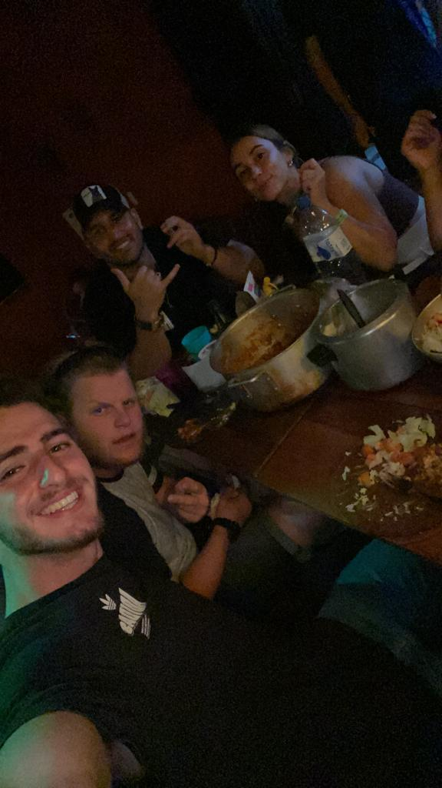

30.4.22 — היום שהכרנו
פתאום אתה וטוהר נכנסתם למטבח אחרי שאני ויובי בישלנו איזה 4 שעות וביקשתם להצטרף לארוחה.
אני בכלל חשבתי שאתה דתי עם הכיפה של בוב מארלי על הראש. יש לי ממש תמונה שלך בראש שאתה במטבח נשען על הקיר ומדבר איתי בזמן שאנחנו מבשלות.
ואז שלחנו אתכם לקנות קצת דברים לארוחת שישי וחזרתם רטובים לגמרי מהגשם.
ואז אחרי הארוחה היינו יחד בחדר בהוסטל וראינו סרטונים של אסי וגורי ולא הפסקנו לצחוק, ואז התחלת לעשות לי מסאז בגב, ישר ידעת איך לקנות אותי 🙃
ואז שיצאתם מהחדר עמית ישר אמר לי - הוא רוצה אותך אני אומר לך.
באותו היום בכלל היית אמור כבר לעזוב את האי, וזה מטורף איך היקום גרם לך להישאר ועשה סופה באיליה גרנדה באותו היום.
יום אחרי זה כבר עזבתם את האי וביקשת את המספר שלי.
ומאז לא הבנתי מי זה החופר הזה שכל הזמן רוצה לעשות איתי פייסטיים 🤣